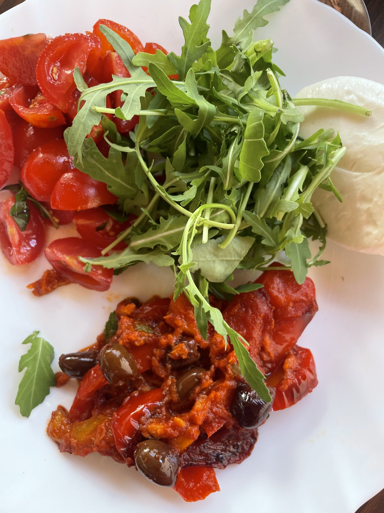

Peperonata con aceitunas, tomate, rúcula y mozzarella
Ingredients
2×
- 1 cebolla
- aceite de oliva
- 3 pimientos rojos
- 200 g de tomate triturado
- 1 puñado de aceitunas negras
- 250 g de tomates cherry
- sal
- orégano
- 1 puñado de rúcula
- 1 mozzarella

Preparación
Paso 1
Rehogar 1 cebolla en aceite de oliva, añadir 3 pimientos rojos en tiras y cocinar 10min.
Paso 2
Añadir 200 g de tomate triturado y 1 puñado de aceitunas negras, salar y cocer a fuego lento 20min.
Paso 3
Cortar 250 g de tomates cherry, aliñar con aceite, sal y orégano.
Paso 4
Servir la peperonata templada con los tomates, 1 puñado de rúcula y 1 mozzarella.